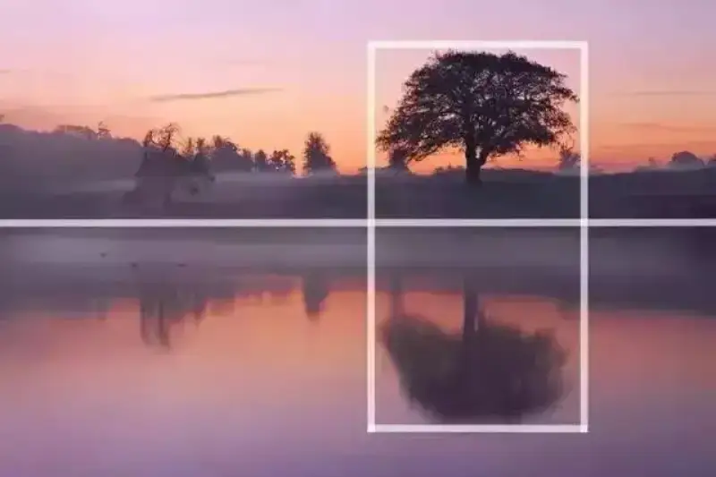
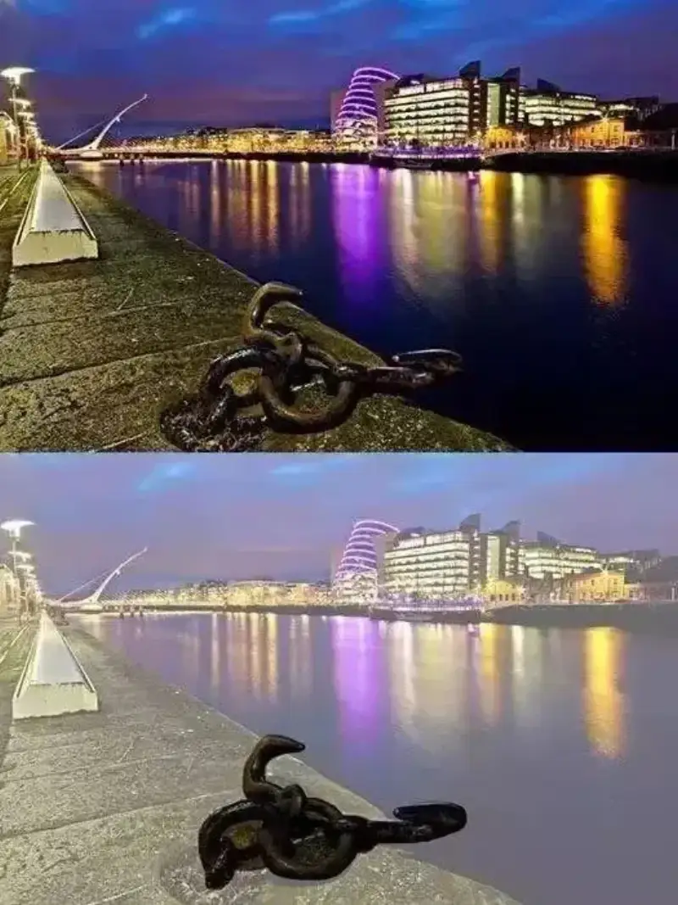
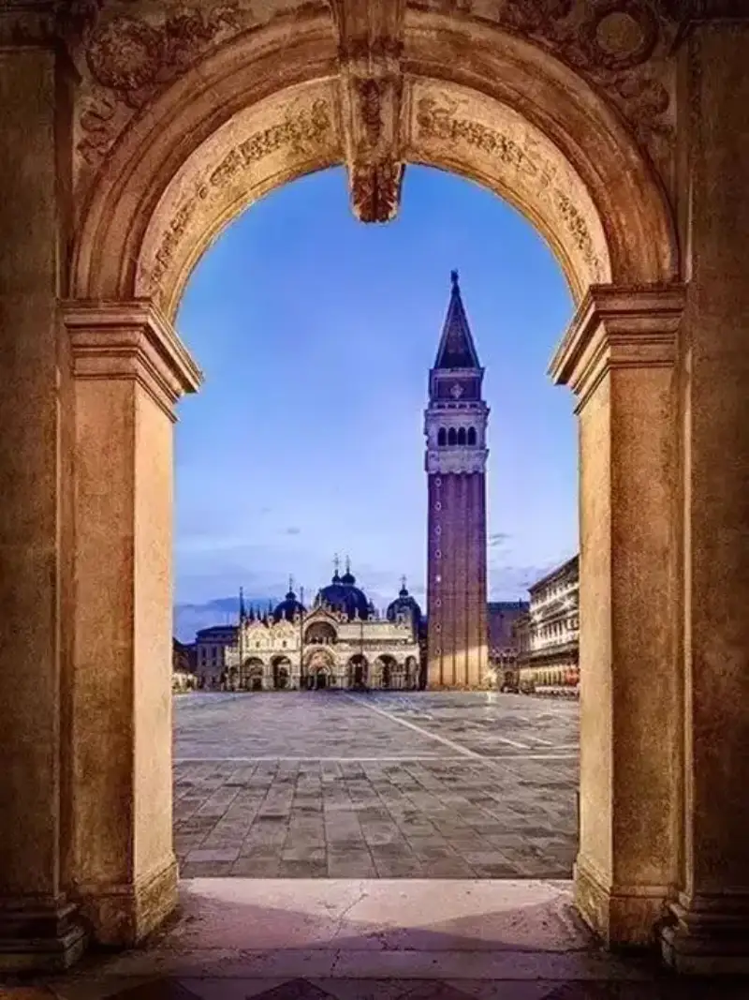
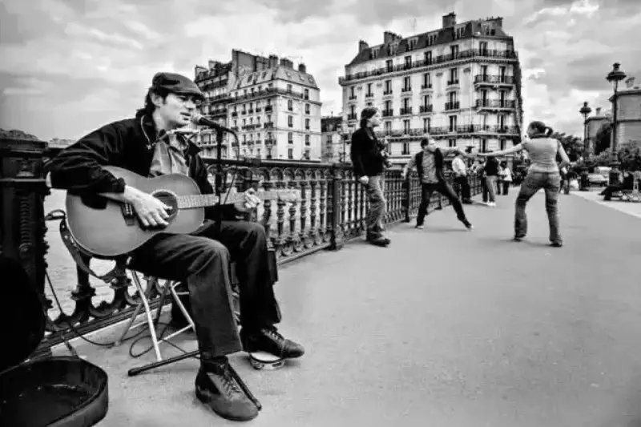
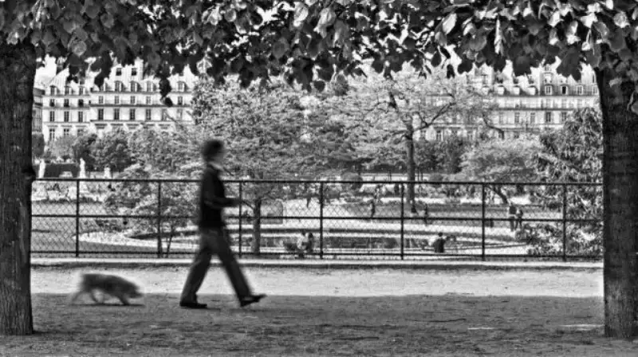
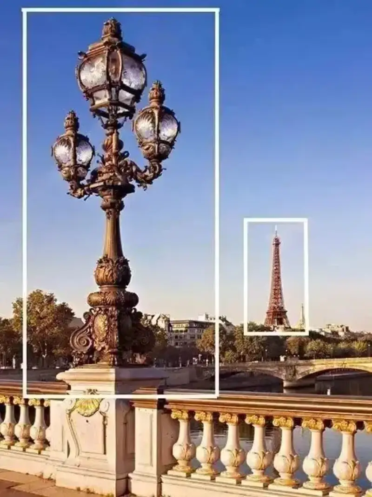
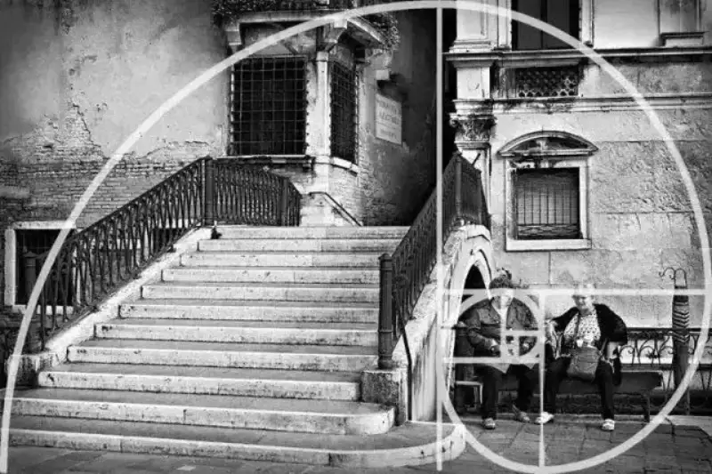

Learning to take photos sounds ordinary.
Studying photography sounds deeper.
Talk about composition,
and everyone seems to know it, but most do not use it well.
The main point of composition
is to arrange the elements of the frame to draw in the viewer.
There are countless methods, so we will cover the classic ones.
Today we go from simple to deep and pull it all together,
to count through 20 practical compositions.
Rule of thirds
Split the frame into three equal parts along its height and width, to make nine equal areas. Place the subject on the dividing lines or their crossings. It draws the eye more than placing it dead center. Turn on the screen grid when you shoot, and the composition comes easier.
Center and symmetry
If you decided to stop putting the subject in the center, sorry, now we go the other way. When a scene holds something with a natural frame, use center composition. The reflection on a smooth surface suits symmetric composition.


Foreground and depth
To add depth you look for a narrow, hollow scene. Good use of the foreground does the same, and it can even give a flat scene a sense of dimension.
Sometimes you do not need to line up foreground objects into a single line. Just pick a clear point of interest and place it in front.

Frame within a frame
Frame composition is a variation on the foreground. But a structure that wraps all sides creates depth better than a one-sided foreground. Look for windows, arches, or slanting branches that have some curve, and use them as the foreground.

Leading lines
Leading lines draw the viewer's eye to the subject you want to emphasize. They can be a street, a wall, or a pattern. The key is to pull the lines out of the scene, pick lines that stretch, and place the subject at the end of the lines.
Diagonal lines and triangles
People say diagonals and triangles give a frame dynamic tension. Why? Are triangles not a very stable shape? In everyday view, we expect things, especially buildings, to stand upright from the ground. When you shoot lines that are deliberately off-balance and lean as if about to tip, the unease you feel gives the subject strength and hidden motion.

Pattern and texture
People are naturally drawn to patterns. Because the pattern matches their expectation, it also feels comfortable. By this rule, use the texture of scene elements and repeat the pattern, and you easily get a visually pleasing composition.
Odd number rule
Can photography become a math problem? Strangely, when the elements in a scene are an odd number, people focus better. A single, unpaired object may be easier for the eye to rest on. It does not fit every scene, but it is worth a try.
Fill the frame
Let the subject fill the frame, with none or only a little empty space. The viewer's full attention goes to the subject, and the details stand out. To fill the frame you must crop the minor elements, and that is a good way to simplify.
Empty space
Now it is time to reverse it. Do not fill the frame. Boldly raise the share of empty background, and it also sets off your subject. The catch: your background must be clean and uniform.
Simplify and minimalism
Less is more, and photography is the art of subtraction. You have heard these lines before. Cut the messy, disordered elements. Break the scene into a few large areas. Compress the information in the frame. Emphasize one subject, and simplify the picture.
Separate the subject
Use shallow depth of field to blur the background. It is a strong way to set off the subject. Turn on macro mode, get close to the subject, and increase the distance between subject and background for better blur.
Change the viewpoint
Most of the time, you shoot from the same height and angle as your eyes. A normal view matches how we look, but it can feel plain. Change your position (high floors, or near the ground) and angle (high angle, low angle) for freshness and impact.
Or cross a barrier in the scene. Shoot from a place where people rarely go, such as the middle of a river, and you get an interesting frame.

Color contrast
Color is often ignored in composition. Color theory matters not only to designers and artists. Photographers should use this element too. Contrast of color makes a frame more lively. You can use contrast of hue, contrast of warm and cool, and contrast of color areas.
Spatial relationship
In short, spatial relationship is how you show near and far, and the direction of movement in the frame. When the subject sits on one side, leave room on the other side for it to move into. Use the subject as the spatial reference to show the size and direction of the space, and the near-far relation of other objects.

Left to right
When the direction of movement in a scene matches the modern reading habit of left to right, it follows the flow of the eye and feels more comfortable and natural.

Balance visual weight
In the rule of thirds above, a subject near a dividing line (or crossing) on one side can leave the other side empty and unbalanced. Put a supporting actor (a secondary subject) on the line or point on the other side, and you balance the visual weight. Best of all, use the near-large and far-small perspective, so one large and one small balance the frame without losing dimension.

Ordered arrangement
Use the arrangement of similar elements in a scene. In the repetition, you emphasize the group and strengthen its presence. Sometimes the arrangement itself brings an abstract art feel.
Golden triangles
Split the frame along its diagonal into two right triangles. Drop a perpendicular from the hypotenuse to find a crossing. In fact you get two diagonals and four crossings. In the golden triangle method, place the perspective lines on the diagonal and the subject on a crossing. It also matches the visual beauty people like.
Golden spiral
The golden spiral also uses the Fibonacci spiral to find the visual point of interest. Pick the right angle, arrange the scene along the spiral, present the subject naturally, and pull the frame together. It carries a classic, artistic beauty.
